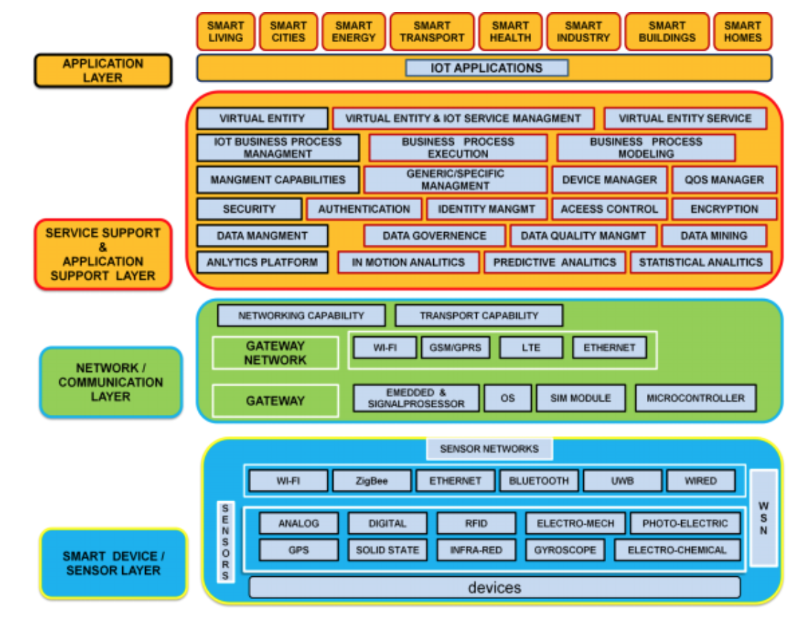
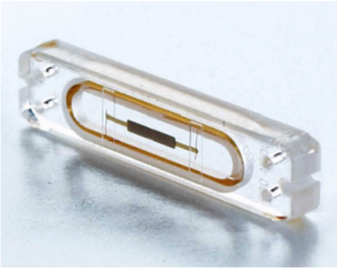
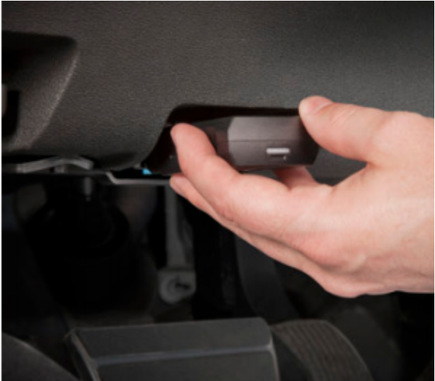

Can you imagine a world where billions of objects can sense, communicate and share information over the internet. Maybe one day you will be able to control your air conditioner and you can make it on, while you are returning home. That is not a science fiction movie but a reality of future and it is just a basic example of what we call internet of things or IOT that is a future technology where all electronic devices will be connected to others.
What is IOT?
It refers to the concept that the internet is no longer just a global network for people to communicate with one another using computers. But it is also a platform for devices, all kind of devices in different size and type: vehicles, smart phones, home appliances, camera , medical instruments , industrial systems , buildings , where they can communicate electronically with the world around them and share information through the internet. By combining these connected devices with automated systems, it is possible to "gather information, analyse it and create an action"
Architecture of iOT
IOT architecture consist of different layers of technologies, it serves to illustrate how various technologies relate to each other. The implementation of a connected product typically requires the combination of multiple software and hardware components in a multilayer stack of IOT technologies
Sensors : enable the interconnection of the physical and digital worlds allowing real time information to be collected and processed. The sensors have the capacity to take measurements such as temperature, air quality, speed, humidity, pressure, flow, movement and electricity etc. In some cases, they may also have a degree of memory, enabling them to record a certain number of measurements. A sensor can measure the physical property and convert it into signal that can be understood by an instrument. Sensors are grouped according to their unique purpose such as environmental sensors, body sensors, home appliance sensors and vehicle telematics sensors, etc. Then what’s needed is a way for sensors to generate electricity from environmental elements such as vibrations, light, and airflow.
Gateways and Networks : Massive volume of data will be produced by these sensors and this requires a robust and high performance wired or wireless network infrastructure as a transport medium. Current networks have been used to support machine-to-machine (M2M) networks and their applications. With demand needed to serve a wider range of IOT services and applications such as high-speed transactional services, context-aware applications, etc. Multiple networks with various technologies and access protocols are needed to work with each other in a heterogeneous configuration.
Management Service Layer : The management service renders the processing of information possible through analytics, security controls, process modeling and management of devices. IOT brings connection and interaction of objects and systems together providing information in the form of events or contextual data such as temperature of goods, current location and traffic data. Some of these events require filtering or routing to post-processing systems such as capturing of periodic sensory data, while others require response to the immediate situations such as reacting to emergencies on patient’s health conditions. The rule engines support the formulation of decision logics and trigger interactive and automated processes to enable a more responsive IOT system. In the area of analytics, various analytics tools are used to extract relevant information from massive amount of raw data and to be processed at a much faster rate.
Application Layer : The IOT application covers “smart” environments/spaces in domains such as : Transportation, Building, City, Lifestyle, Retail, Agriculture, Factory, Supply chain, Emergency, Healthcare, User interaction, Culture and tourism, Environment and Energy.
Examples
HEALTH
The Internet of Things offers new solutions for preventing, screening, and diagnosing a variety of health conditions. Devices allow individuals to monitor every aspect of their health, including weight, body mass, sleep cycles, and daily activity levels. Preventable health conditions constitute 80 percent of overall disease burden and 90 percent of health care costs. By collecting and tracking data about their health, patients are able to identify health problems sooner and get treatment faster. Not only does this cut down on health care costs, it also provides new opportunities for improved quality of life.
baby monitors : The Mimo baby monitor is a body suit that monitors a baby’s body temperature, motion, and breathing patterns.39 Sensors use Bluetooth wireless communication to relay this data to a base station, which then transmits it to the Internet to be analyzed by the company’s sleep analysis software. Parents can use a mobile app on their smart phone to see their baby’s data in real-time, monitor their sleeping habits over time, and keep track of eating schedules and diaper changes. Parents can also setup the device to receive alerts on their phone if anything changes.
heart monitors : The CardioMEMS Heart Sensor is an implantable medical device for monitoring heart failure. Heart failure affects 5.7 million people in the United States and costs the country $34.4 billion annually in health care services, medication, and lost productivity.53 The device, which is about the size of a paper clip, is implanted into a patient’s pulmonary artery using a minimally-invasive technique and measures pulmonary arterial pressure. Data from the device is collected wirelessly and transmitted to a central database for the patient’s health care providers to review. A rise in pulmonary arterial pressure is the clearest sign of a potential problem. Until now, doctors had to use a change in weight to predict potential problems, a less accurate technique. When health care providers are alerted to a problem, they can advise a change in medication to treat the condition
TRANSPORTATION
Delphi Connect : is a small device that allows drivers to monitor and control their vehicle remotely via the Verizon LTE network. The device connects to the on-board diagnostics port found in all vehicles made after 1996, and monitors information about the vehicle’s overall health, such as battery voltage, fuel level, and engine status. The device sends drivers alerts for maintenance issues, so that they know what is wrong before they take their car in to be serviced. The device includes GPS, so vehicle owners can see both historical maps of when, where, and how far they have driven, as well as real-time information about their vehicle’s location. Drivers can use their smart phone to control their car, such as remotely locking or unlocking the doors.